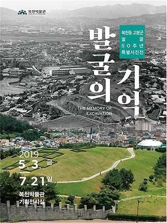
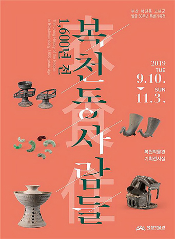

교육 / 전시
-
특별전시 [복천동 고분군 발굴 50주년 특별사진전]
발굴의 기억일시 : 2019년 5월 3일 ~ 7월 21일 (총 90일)
장소 : 복천박물관 1층 기획전시실전시명 : 복천동 고분군 발굴 50주년 특별사진전, <발굴의 기억>
전시기간 : 2019년 5월 3일 ~ 7월 21일(총 90일)
전시자료 : 복천동 고분군 발굴 관련 사진 및 신문기사 주요 출토 유물 및 인물사진
전시내용 : 발굴 50주년을 맞는 복천동 고분군의 발굴사를 정리하고 그 성과들을 재조명 자세히보기종료  -
특별전시 [복천동 고분군 발굴 50주년 특별기획전]
1600년 전 복천동 사람일시 : 2019년 9월 9일 ~ 10월 5일
장소 : 복천박물관 1층 기획전시실전시명 : 복천동 고분군 발굴 50주년 특별기획전, <1600년 전 복천동 사람>
전시기간 : 2019년 9월 9일 ~ 10월 5일
전시자료 : 복천동 고분군 발굴 관련 사진 및 신문기사 주요 출토 유물 및 인물사진
전시내용 : 특별초청강연회 및 갤러리 토크 진행 자세히보기종료 
안내/새소식
관람 문의
- 문의 |051-563-5745
- . 관람료 및 주차료 무료입니다.
- . 개인 및 가족은 예약 없이 자유관람이 가능합니다.
- . 단체(20인 이상)는 관람예약이 필요합니다.
POPUPZONE
복천박물관 관람
사전예약
1시간당 30명 선착순, 1일 전까지 예약
새소식
- 2021년 복천박물관 <1월 우리 문화재 만들기> 안내2021-01-14
- 2021년 1월 1일(금) 복천박물관 휴관 안내2020-12-31
- 2021년 복천박물관 비대면 교육프로그램 안내2020-12-04
- 2021년도 복천박물관 특별전시실 대관신청 안내2020-11-17